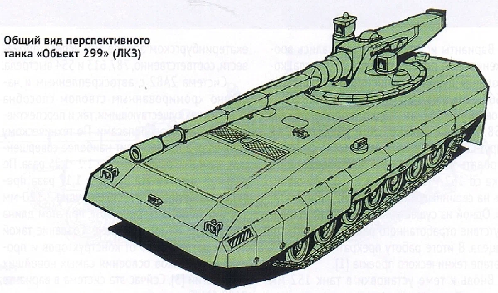

Предприятие 98
Танковое конструкторское бюро имени
Ю.Перунова Башкортостанской республики
Ю.Перунова Башкортостанской республики
Поиск
...
Предложения
Написать
Данное государственное учреждение было основано 30 марта 1955 года указом главы цк.КПСС Никитой Сергеевичем Хрущёвым и главой Министерства обороны СССР Георгием Константиновичем Жуковым.
Руководил предприятием 98 Сергей Юрьевич Марончук, поставленный на эту должность 12 апреля 1955 года. Под его руководством конструкторское бюро развивалось 30 лет и стало ведущим в этой сфере. Были выпущены основные боевые танки, самоходные артиллерийские установки и многое другое.
После ухода Марончука на пенсию 7 сентября 1985 года, на пост директора пришёл Анатолий Николаевич Борозда. В период его управления будет создан чертёж лучший образец танка нового поколения - объект 299. Но в связи с перестройкой, проект был заброшен, а предприятие закрыто.
В 2011 году предприятие 98 было восстановлено. Руководить предприятием стал Иосиф Андреевич Мурзов. С тех пор предприятие занимается массовым выпуском Т 80 БТМС, БРДМ 3 разных модификаций, а также выпускает на заказ БРДМ 3 гражданской версии. Предприятие работает и по сей день.
Руководил предприятием 98 Сергей Юрьевич Марончук, поставленный на эту должность 12 апреля 1955 года. Под его руководством конструкторское бюро развивалось 30 лет и стало ведущим в этой сфере. Были выпущены основные боевые танки, самоходные артиллерийские установки и многое другое.
После ухода Марончука на пенсию 7 сентября 1985 года, на пост директора пришёл Анатолий Николаевич Борозда. В период его управления будет создан чертёж лучший образец танка нового поколения - объект 299. Но в связи с перестройкой, проект был заброшен, а предприятие закрыто.
В 2011 году предприятие 98 было восстановлено. Руководить предприятием стал Иосиф Андреевич Мурзов. С тех пор предприятие занимается массовым выпуском Т 80 БТМС, БРДМ 3 разных модификаций, а также выпускает на заказ БРДМ 3 гражданской версии. Предприятие работает и по сей день.
Наша гордость:
